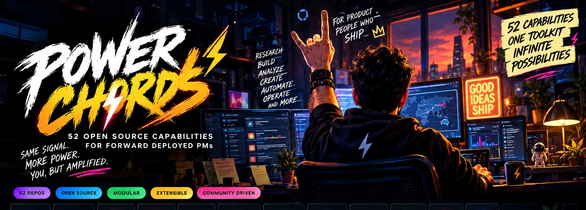

01
Customer Discovery → PRD
Turn customer evidence into a problem statement, journey, prioritized requirements, experiment plan and risks.
7 composable native powers
THE PRODUCT WORKROOM · BUILT TO SHIP
Power Chords takes real customer evidence through connected, permission-aware workflows into actionable product artifacts. One local workspace. Clear outcomes. Zero mandatory model subscriptions.
⚡ Run Power ChordsExplore working workflows ↓Built by Saurabh Misal, for forward-deployed product managers and builders who move beyond a slide deck.
Paste real context, run an evidence-grounded workflow and download a reviewable document. Each workflow declares which powers it composes, records source context and flags unknowns rather than making up customer metrics.
Turn customer evidence into a problem statement, journey, prioritized requirements, experiment plan and risks.
7 composable native powersDraft an integration decision pack, interface questions, quality plan, dependencies and go/no-go gates.
6 composable native powersStructure options, evidence, measurable outcomes, risks and a decision memo.
6 composable native powersPrepare launch messaging, milestones, owners, rollout, monitoring, and contingency steps.
7 composable native powersCustomer context → Evidence ledger → Workflow composer
↓
Product / Engineering / Ops powers
↓
Actionable Markdown work product
↓
Local history + review gatesgit clone https://github.com/saurabhmisal/power-chords.git cd power-chords npm start # Open http://127.0.0.1:4327 npm test npm run demo
Requires Node.js 22.13+. Native flows run locally; no external model or external account is required. Workroom files are not encrypted at rest in this prototype.